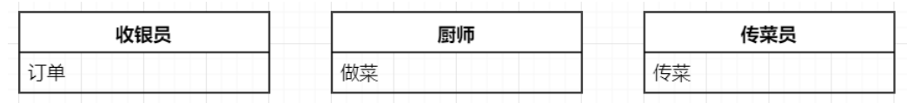
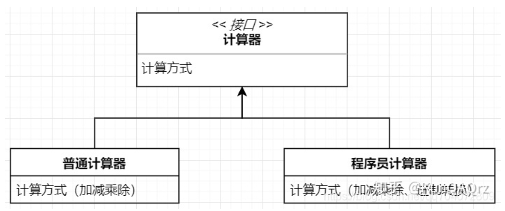
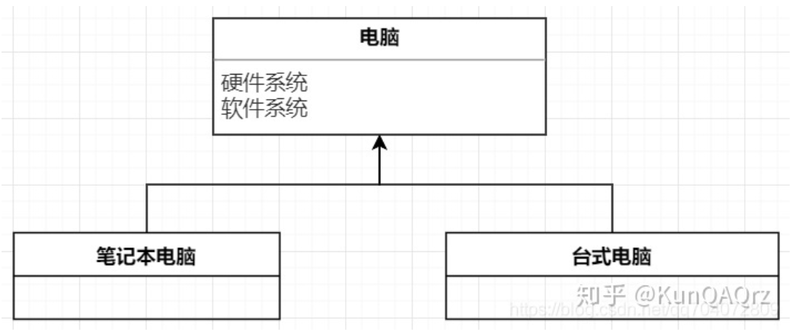
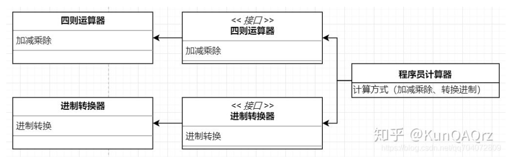
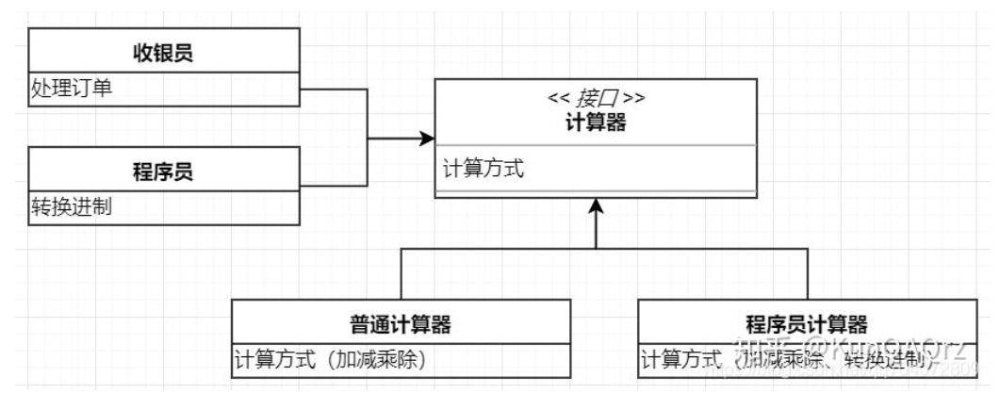

软件设计的SOLID原则
在软件开发中，为了提高软件系统的可维护性和可复用性，增加软件的可扩展性和灵活性，程序员要尽量根据 7 条原则来开发程序，从而提高软件开发效率、节约软件开发成本和维护成本。
SOLID 是面向对象设计五大重要原则的首字母缩写，当我们设计类和模块时，遵守 SOLID 原则就如同它的名字一样：(solid，可靠的)，可以让软件更加稳定、灵活和健壮。
分别为：
S：SRP（Single Responsibility Principle）单一职责原则
O：OCP（Open Closed Principle）开闭原则
L：LSP（Liskov Substitution Principle）里氏替换原则
I：ISP（Interface Segregation Principle）接口隔离原则
D：DIP（Dependence Inversion Principle）依赖倒置原则
SRP（单一职责原则）
一个类或者一个模块只做一件事。让一个类或者一个模块专注于单一的功能，减少功能之间的耦合程度。这样做在需要修改某个功能时，就不会影响到其他的功能。

OCP（开闭原则）
对扩展开放，对修改关闭。一个类独立之后就不应该去修改它，而是以扩展的方式适应新需求。

LSP（里氏替换原则）
所有基类出现的地方都可以用派生类替换而不会让程序产生错误，派生类可以扩展基类的功能，但不能改变基类原有的功能

ISP（接口隔离原则）
一个接口应该拥有尽可能少的行为，使其精简单一。对于不同的功能的模块分别使用不同接口，而不是使用同一个通用的接口。

DIP（依赖倒置原则）
高级模块不应该依赖低级模块，而是依赖抽象接口，通过抽象接口使用对应的低级模块。

本博客所有文章除特别声明外，均采用 CC BY-SA 4.0 协议 ，转载请注明出处！